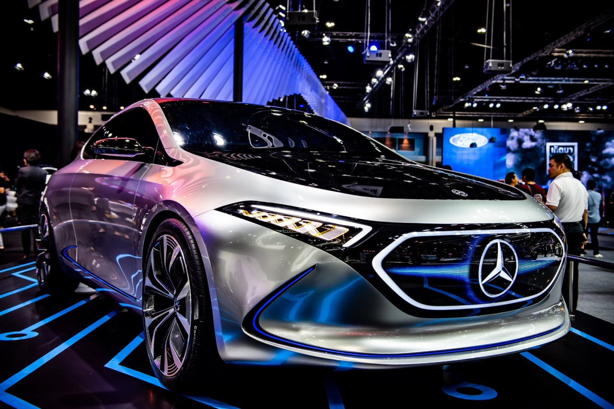

Interesting facts about cars.
The first stationary gasoline engine developed by Karl Benz was a single-cylinder two-stroke unit, which first went into operation on New Year's Eve 1879. Benz achieved such commercial success with this engine that he was able to devote more time to his dream. creating a lightweight gasoline-powered car in which the chassis and engine form a single unit.
Since 1937, Daimler-Benz AG has increasingly produced armaments such as the LG 3000 trucks and aircraft engines such as the DB 600 and DB 601. To create additional aircraft engine capacity, in addition to the Marienfeld plant, the Genshagen plant was built in a well hidden forest area south of Berlin in 1936.
Between 1949 and 1960, Daimler-Benz AG managed to regain its pre-World War II position in the fast-growing German automotive industry. Already in 1954, the company crossed the billion mark in turnover and thereby broke the existing sales record.
Daimler-Benz, a versatile specialist in the automotive industry, maintained its prominent position in the international automotive markets in the 1960s and 1970s, while the industry as a whole experienced sharp fluctuations in sales. In Europe, Daimler-Benz has been a leader in the production of vehicles for a discerning clientele as well as trucks and buses.
The second oil crisis in the late 1970s, intensified environmental debate and the emergence of new Asian competitors changed the basic conditions for the further development of the company. On the back of a general decline in manufacturing performance, the commercial vehicle sector fell. The sales opportunities for top quality vehicles in markets related to Mercedes-Benz have also prompted a cautious assessment. At the initiative of the then CFO and then Chairman of the Board, Edzard Reiter, the company was to become more independent from cyclical fluctuations in the automotive sector by increasing the corporate portfolio. Access to key technologies and emerging sectors such as electronics, aviation and services was seen as a precondition for the company's long-term profitability. Through the multilateral use of various technologies, promising, expandable key competencies were to be acquired and synergistic effects achieved. Against this background, MAN's 50% stake in MTU München, a controlling stake in the Dornier group (1985), as well as AEG (1985) and MBB (1989) were acquired. These acquisitions required a restructuring of the integrated technology group. As part of the new corporate structure of Daimler Benz AG, Mercedes-Benz AG was founded on June 29, 1989. Professor Werner Niefer became the Chairman of the Management Board. Thus, from July 1989, Daimler-Benz AG acted as a managing holding company, under whose roof the corporate divisions of AEG AG, Mercedes-Benz AG and Deutsche Aerospace (DASA) were assembled. In 1990, they were joined by a fourth corporate division, Daimler-Benz InterServices AG (debis). In 1993, Daimler-Benz AG was listed on the New York Stock Exchange (NYSE).
As a result of the real estate crisis in the United States, a worldwide recession has begun. After hitting the financial sector only in the beginning, in late 2008 it escalated into a global economic crisis that deeply affected the automotive industry around the world. The increasingly gloomy situation in the automotive market has also led to losses for Daimler AG since mid-2008. In early 2009, Daimler increased its share capital by approximately ten percent and acquired Aabar Investments PJSC, an investment company registered in Abu Dhabi, as a new major shareholder. The strong financial position of the company allowed it to continue to invest large sums in research and development during a period of economic uncertainty and macroeconomic instability. This work has focused mainly on the development of new alternative drive technologies, which have been deployed, for example, in the B-Class F-Cell, Concept Blue Zero E-Cell Plus and S 500 Plug-in Hybrid technology. With these developments, Daimler is playing a pioneering role on the path to sustainable, emission-free mobility. In both the passenger car and commercial vehicle segment, despite the crisis, Daimler AG continued to develop and expand its commercial activities in view of future market potentials - including in the Asian market. The collaboration with the Beijing Automotive Industry Holding Company (BAIC) has resulted in the opening of a new manufacturing facility in Beijing that produces E-Class and C-Class vehicles for the Asian market.
A multitude of new passenger cars and commercial vehicles, equipped with intelligent assistance systems and environmentally friendly drives, are key milestones for the future of our business and the most valuable premium automotive brand.
Weliel.ga
..6.3.2021